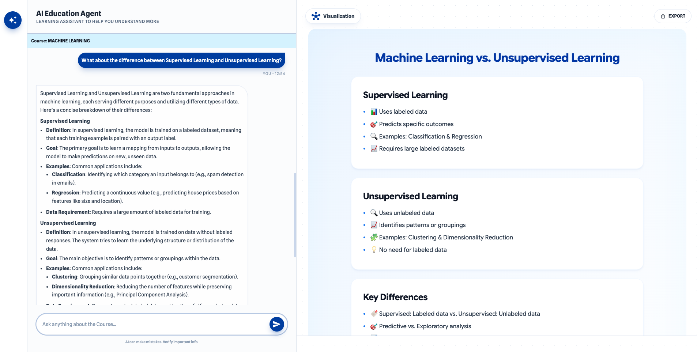
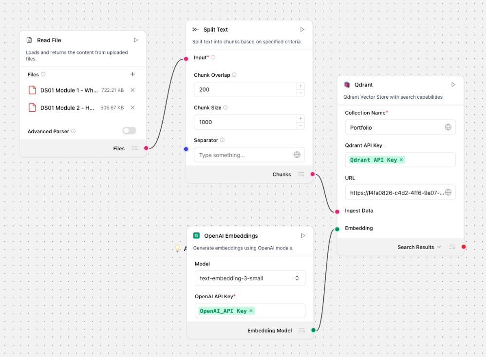
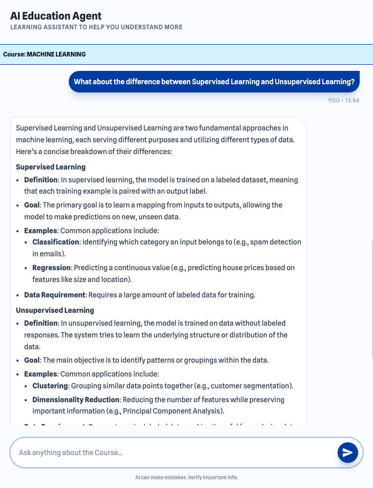
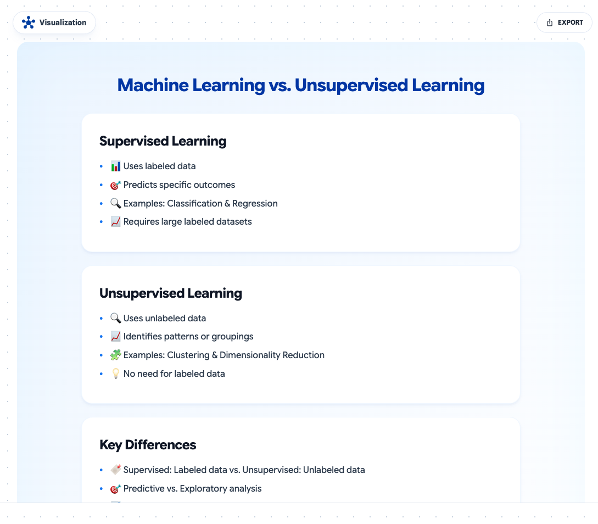
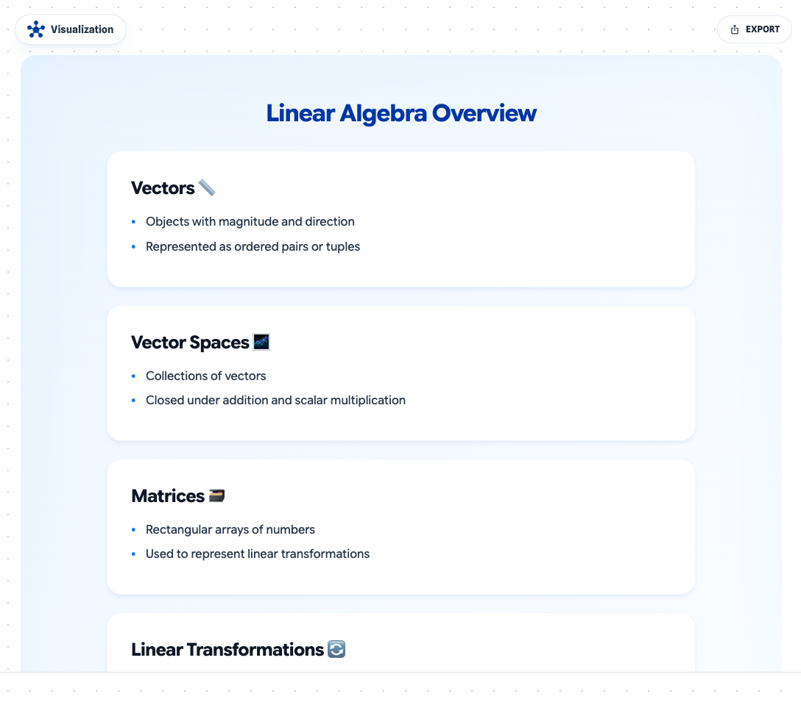
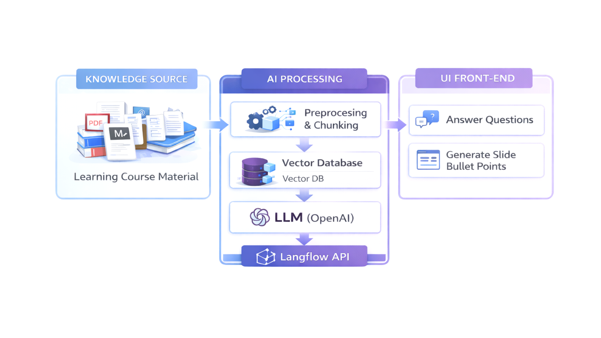
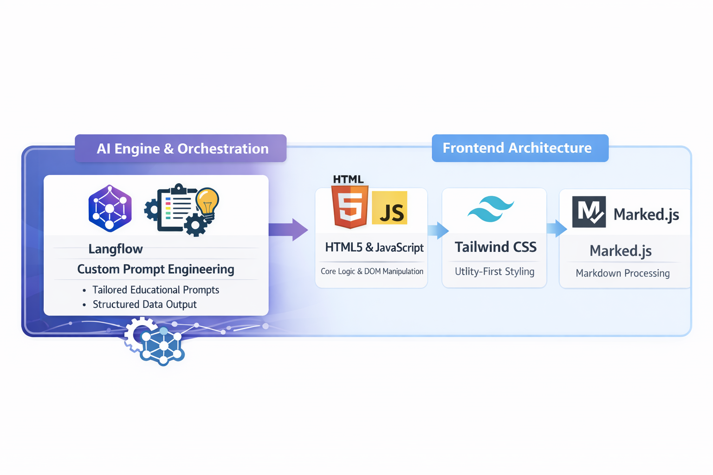

Transforms education course content into a conversation experience and a Slide bullet points

The project was born from a desire to make learning complex subjects like Machine Learning more interactive and visually intuitive. Standard LLM interfaces often provide walls of text that can be overwhelming. This project aims to bridge that gap by combining a conversational AI tutor with a dynamic visualization canvas that renders concepts in real-time.
RAG Agent that collects knowledge from provided learning materials. Knowledge source can be any reliable source in text format from school or education providers. The Agent is built on Langflow and powered by OpenAI LLM.




A dedicated side panel that creates Slide of bullet points based on the AI’s explanation. A student can read the explanation in a better visual than a wall of text.


Role:
AI Product Designer
Project Status
Personal Project
Timeline:
February 2026
Tools / Technology:
Langflow, OpenAI, Antigravity, Figma